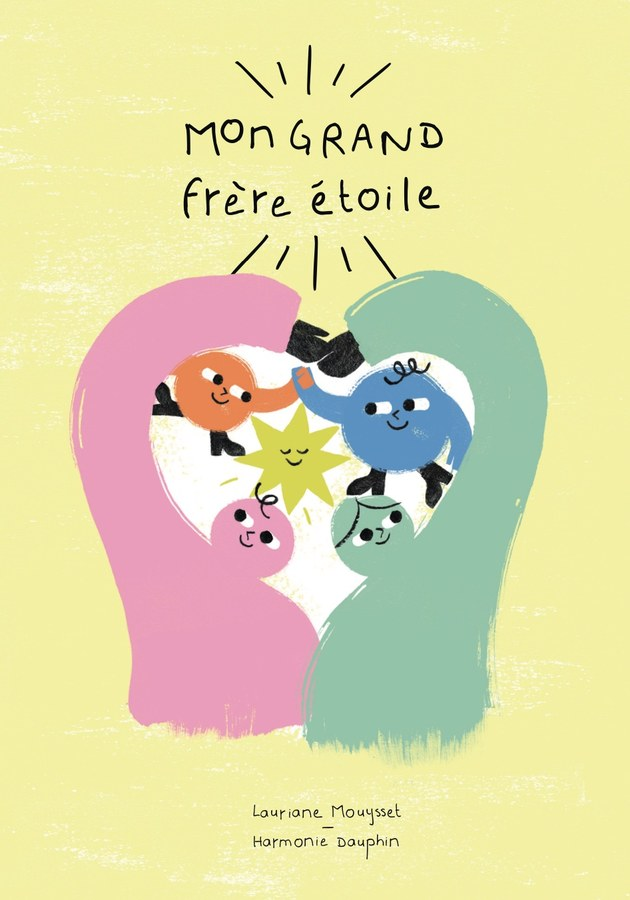
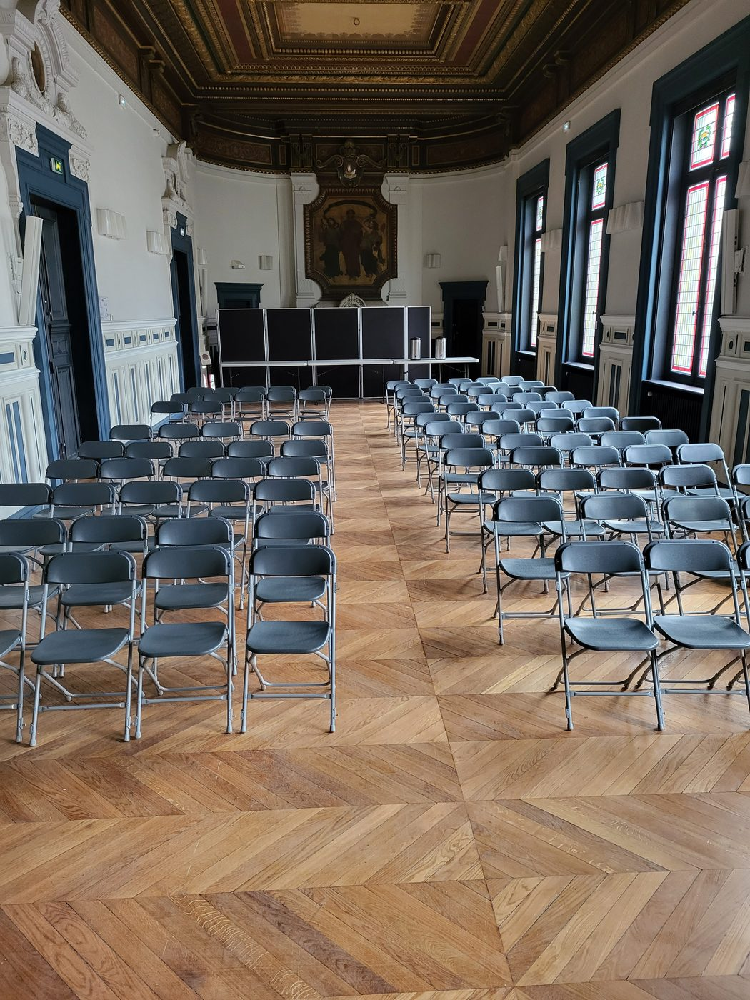
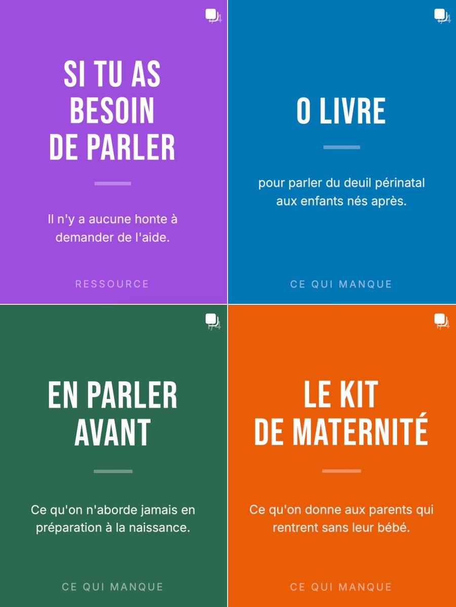

Perdre un enfant avant, pendant ou peu après la naissance n'est ni rare, ni honteux. C'est pourtant l'un des derniers tabous.
Comme l'avortement, la fausse couche ou la PMA avant lui, il est temps que la société affronte ce deuil. Laissé dans l'intime, le deuil périnatal isole et culpabilise. Porté dans l'espace public, il devient l'affaire de tous : on le comprend, on outille mieux, on légifère correctement, on cesse d'avoir honte.
L'association In/Visibles, fondée par Lauriane Mouysset, vise à transformer le regard de la société sur le deuil périnatal. Sa mission : faire connaître ce deuil, du grand public aux institutions, pour qu'il cesse d'être une affaire privée et devienne une responsabilité collective.
In/Visibles ne propose pas d'accompagnement aux familles qui traversent ce deuil. Toutefois, les personnes en demande de soutien seront accueillies avec bienveillance et orientées vers les ressources et services adaptés.
CréerÉditer et diffuser des œuvres et des supports sur ce deuil.
InformerFaire connaître les droits, les ressources et les dispositifs existants.
RassemblerOrganiser des rencontres et des événements de sensibilisation.
Faire évoluerContribuer à une meilleure prise en compte, sociale et juridique.
Porter le deuil périnatal dans l'espace public.


1 juil. 2026
L'association vit de dons. Chaque soutien permet d'éditer, de sensibiliser et de faire exister ce deuil au grand jour.